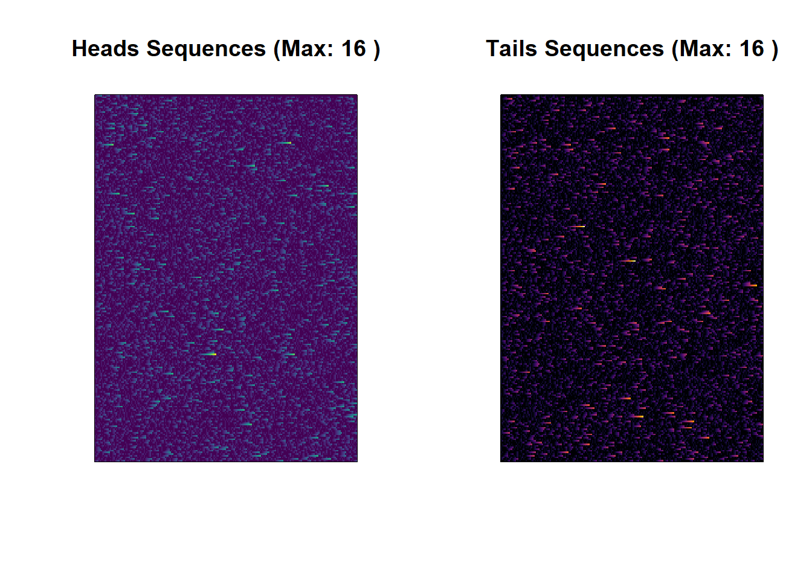

Explore the captivating world of coin flip sequences through a dynamic R code snippet.
Engage in the simulation of 50,000 coin flips, utilizing the viridis and ggplot2 libraries for insightful visualizations.
Uncover the step-by-step breakdown of the code, offering a comprehensive guide to understanding coin flip sequences.
Analyzing Coin Flip Sequences with R
In this blog post, we’ll dive into a fun R code snippet that simulates a series of coin flips and analyzes the resulting sequences. We’ll use the viridis and ggplot2 libraries to create visual representations of the sequences and gain insights into the outcomes. Let’s break down the code step by step.
Setting Up the Environment
library(viridis) # Import the viridis color palette library
Warning: il pacchetto 'viridis' è stato creato con R versione 4.3.2
Caricamento del pacchetto richiesto: viridisLite
library(ggplot2)set.seed(123) # Set a seed for reproducibilitynum_flips <-50000flips <-sample(c("Heads", "Tails"), num_flips, replace =TRUE)
Here, we load the necessary libraries and set a seed for reproducibility. We simulate 50,000 coin flips, storing the results in the flips variable.
Creating a Color Matrix
# Image aspect ratioaspect_ratio <-1# You can customize the aspect ratio heren_col <-round(sqrt(num_flips) * aspect_ratio)n_row <-ceiling(num_flips / n_col)# Create a color matrix to represent coin flipscolors <-ifelse(flips =="Heads", "red", "blue")
We create matrices heads_matrix and tails_matrix to represent the sequences of heads and tails. These matrices help us analyze the coin flip sequences.
Analyzing Sequences
# Function to calculate the number of consecutive sequencescalculate_sequences <-function(matrix) { sequences <-matrix(0, nrow =nrow(matrix), ncol =ncol(matrix))for (i in1:nrow(matrix)) { count <-0for (j in1:ncol(matrix)) {if (matrix[i, j] ==1) { count <- count +1 sequences[i, j] <- count } else { count <-0 } } }return(sequences)}
Visualizing Sequences
# Calculate sequences for Heads and Tails matricessequences_heads <-calculate_sequences(heads_matrix)sequences_tails <-calculate_sequences(tails_matrix)# Find the longest sequence for Heads and Tailslongest_sequence_heads <-max(sequences_heads)longest_sequence_tails <-max(sequences_tails)
We define a function calculate_sequences that calculates the number of consecutive sequences in a matrix. This function is used to analyze the sequences of heads and tails.
# Create images with sequences and titlespar(mfrow =c(1, 2)) # Display the two images side by sideimage(t(sequences_heads), col =viridis(100), main =paste("Heads Sequences (Max:", longest_sequence_heads, ")"), xaxt ="n", yaxt ="n")image(t(sequences_tails), col =inferno(100), main =paste("Tails Sequences (Max:", longest_sequence_tails, ")"), xaxt ="n", yaxt ="n")

Table Generation
library(knitr)# Calculate sequence lengths for Heads and Tailssequence_lengths_heads <-table(sequences_heads)sequence_lengths_tails <-table(sequences_tails)# Calculate the percentage of sequence lengthspercentages_heads <-prop.table(sequence_lengths_heads) *100percentages_tails <-prop.table(sequence_lengths_tails) *100# Create data frames with lengths, absolute numbers, and percentagesdataframe_heads <-data.frame(Length =names(sequence_lengths_heads),Absolute_Numbers =as.numeric(sequence_lengths_heads),Percentage = percentages_heads)dataframe_tails <-data.frame(Length =names(sequence_lengths_tails),Absolute_Numbers =as.numeric(sequence_lengths_tails),Percentage = percentages_tails)# Create formatted tableskable(dataframe_heads, caption ="Table of Heads Sequence Lengths")
Table of Heads Sequence Lengths
Length
Absolute_Numbers
Percentage.sequences_heads
Percentage.Freq
0
25107
0
50.0378667
1
12544
1
25.0000000
2
6269
2
12.4940210
3
3137
3
6.2519930
4
1570
4
3.1289860
5
789
5
1.5724649
6
368
6
0.7334184
7
191
7
0.3806601
8
95
8
0.1893335
9
55
9
0.1096142
10
27
10
0.0538106
11
12
11
0.0239158
12
6
12
0.0119579
13
2
13
0.0039860
14
2
14
0.0039860
15
1
15
0.0019930
16
1
16
0.0019930
kable(dataframe_tails, caption ="Table of Tails Sequence Lengths")
Table of Tails Sequence Lengths
Length
Absolute_Numbers
Percentage.sequences_tails
Percentage.Freq
0
25245
0
50.3128986
1
12535
1
24.9820631
2
6143
2
12.2429050
3
3130
3
6.2380421
4
1570
4
3.1289860
5
779
5
1.5525351
6
376
6
0.7493622
7
188
7
0.3746811
8
98
8
0.1953125
9
53
9
0.1056282
10
28
10
0.0558036
11
13
11
0.0259088
12
7
12
0.0139509
13
4
13
0.0079719
14
3
14
0.0059790
15
2
15
0.0039860
16
2
16
0.0039860
We use the knitr library to generate tables that display the lengths, absolute numbers, and percentages of the sequences for both heads and tails.
Conclusion
In this blog post, we explored a fascinating R code snippet that simulates coin flips and analyzes the resulting sequences. We visualized the sequences and created tables to gain insights into the distribution of sequence lengths. This code is a great starting point for exploring and visualizing sequential data in R.
Feel free to try this code on your own and customize it to suit your needs. Happy coding!